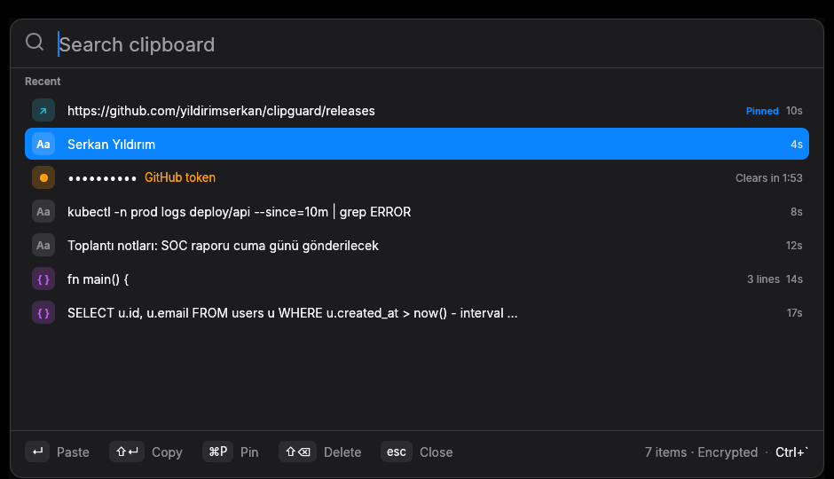

Searchable clipboard history like you're used to, built security-first: encrypted at rest, secrets wiped after 120 seconds, password managers respected, no network at all.

Open it with a hotkey, type a few letters, press Enter. It pastes straight into the app you were using.
Find that SQL query from three weeks ago by typing a few letters of it.
Hotkey, arrows, Enter to paste into the previous app. Shift+Enter just copies.
Code, links and text get their own badges. Multi-line clips show their line count.
Pinned clips are kept. Everything else is kept for 90 days or 10,000 clips.
Tokens, API keys and passwords are masked on screen and wiped after 120 seconds.
Per-machine MSI with silent install for Intune or GPO. Start-at-login stays a per-user choice.
Classic clipboard managers keep everything you copy, forever, in plain text: passwords and API keys included.
| Typical clipboard manager | clipguard | |
|---|---|---|
| History on disk | Plain-text database | AES-256-GCM, key in the OS keystore |
| Tokens, keys, passwords | Kept forever | Detected, deleted after 120 s, clipboard wiped |
| Password managers | Often recorded anyway | Respected, never stored |
| Network | Optional sync, open port | None: no sockets, no telemetry |
| Duplicate detection | Plain hash reveals what was copied | Keyed HMAC |
What clipguard protects, and what it doesn't. Full details in the README.
Latest release from GitHub.
msiexec /i clipguard-<version>-x64.msi /qn
Not code-signed yet: SmartScreen may warn. More info → Run anyway.
tar -xzf clipguard-*-macos-arm64.tar.gz xattr -d com.apple.quarantine clipguard ./clipguard
Auto-paste needs Accessibility permission.
tar -xzf clipguard-*-linux-x64.tar.gz ./clipguard
Needs a Secret Service keyring (GNOME Keyring, KWallet, KeePassXC).
Verify downloads with SHA256SUMS.txt.
The active hotkey is always shown in the window's footer.
| Action | Windows / Linux | macOS |
|---|---|---|
| Open / hide | Ctrl ` | ⌘ ⇧ C |
| Paste into previous app | Enter | ↵ |
| Copy only | Shift Enter | ⇧ ↵ |
| Pin / unpin | Ctrl P | ⌘ P |
| Delete | Del or hover → × | ⌘ ⌫ or hover → × |
| Hide | Esc | esc |
clipguard is free and always will be. If it saves you time, a small sponsorship helps pay for code signing and keeps development going.
♥ Sponsor on GitHub